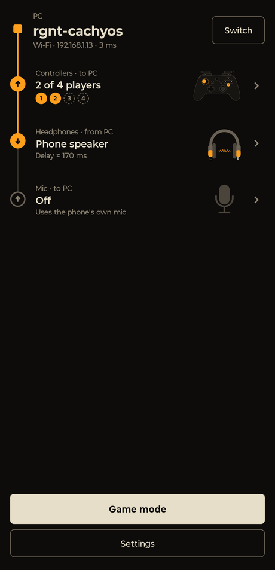
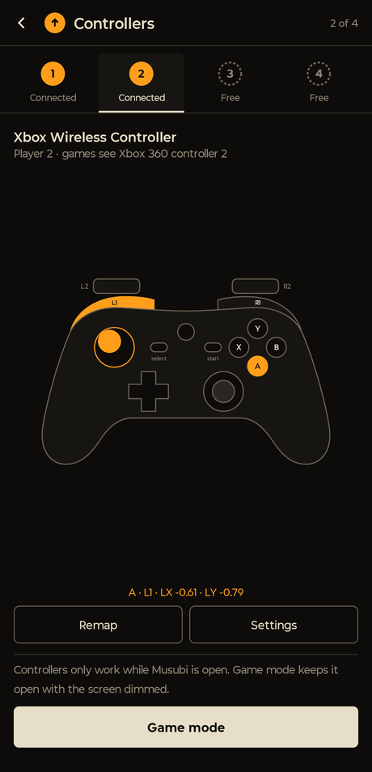
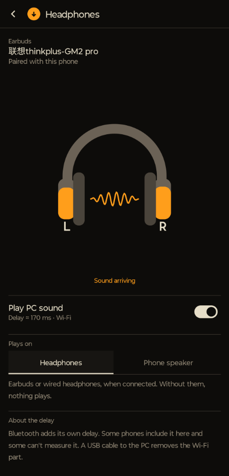
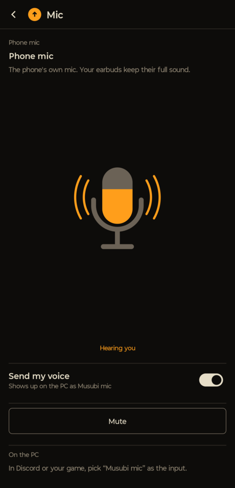
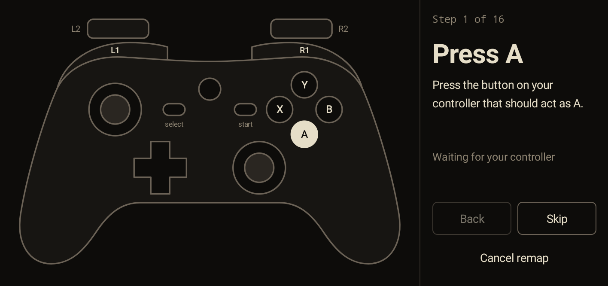
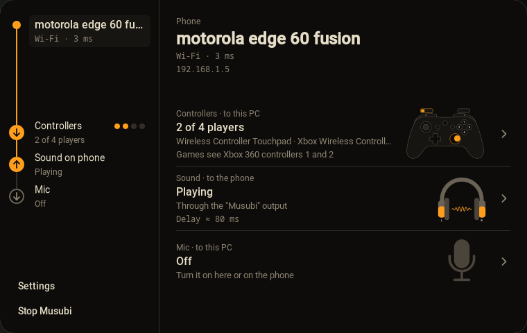

Use your phone as the Bluetooth hub your PC doesn't have.
Pair up to four Bluetooth gamepads with an Android phone. Your PC gets a virtual Xbox 360 controller for each one, and games treat it like a normal pad. I built it because my PC has no Bluetooth and I had an old phone lying around.
v0.10.1 · 27 Nov 2026 · MIT · free and open source
The cord runs both ways
Your controller's input travels up to the PC. The PC's sound travels back down to your earbuds. The phone sits in the middle, on Wi-Fi or a USB cable.
Up to four pads, each one a real Xbox 360 controller to your games
Every pad gets its own player slot. When a game rumbles, the phone vibrates the real pad, with the strong and weak motors kept apart, on controllers Android can vibrate over Bluetooth.

PC sound on the earbuds paired with your phone
Musubi's own part of the delay is about 70 ms. Bluetooth earbuds add their own on top, so a game or low-latency mode on them helps a lot.

Talk through the phone's mic
It shows up on the PC as "Musubi mic". Your earbuds keep their full sound, because Musubi never uses their mic.

Once you're playing
Remap any pad with weird buttons, let the screen go dark while you play, and keep all traffic on your local network.

Fix scrambled buttons in 16 steps
Third-party Bluetooth pads don't always map cleanly on Android. Press each button as the app asks, skip the ones your pad doesn't have, and test the layout live before saving. Each controller keeps its own map, stick deadzone and vibration strength.
- Game mode dims the screenAndroid only sends controller input to the app in front. Game mode dims the screen and stops drawing the pad, and it turns on by itself after a minute without touching the screen. Sound keeps playing even when you lock the phone.
- Local network, or a USB cableNo account and no server in the middle. Approve a phone once on your PC, and save more than one PC to switch from Home. On Linux you can also try a USB cable, which charges the phone while you play. It's still experimental and has worked on one phone so far. Packets aren't encrypted, so stick to a network you trust.
- No ghost controllersVirtual Xbox pads only exist while a controller is actually connected to the phone, and Bluetooth earbuds that expose media buttons as a gamepad are ignored so they never steal a player slot.
- Still early, easy to reportTested on Linux, Windows 10/11 and a handful of Android phones so far. If your pad or phone acts up, open an issue on GitHub. Settings then Open logs gets you the log files to attach.
Download Musubi
Set up your PC first, then install the Android app on your phone. Free and open source under the MIT license.
1. On your PC
- LinuxMain version · run ./install.shLinux setup
- Windows: ViGEmBus driverRequired for virtual Xbox padsViGEmBus 1.22.0
- Windows: Musubi betav0.10.1-win-beta.1Windows beta (.zip)
Step-by-step Windows setup in the README
2. On your phone
- Musubi for Androidv0.10.1 · Android 5.0+Download musubi.apk
What works where
| Feature | Linux | Windows (beta) |
|---|---|---|
| Controllers + vibration (up to 4) | Yes | Yes, tested with 1 so far |
| PC sound on phone | Yes | Yes (default output, 48000 Hz) |
| Phone mic to PC | Yes | Planned |
| USB cable | Experimental | Planned |
| Start with my PC | Yes | Planned |
macOS won't work.

The Linux desktop app. Linux is the main version.
Why "Musubi"?
Musubi means "tying" or "connecting" in Japanese. In Your Name, it's the cord that ties people together, even across distance. Your Bluetooth devices and your PC can't reach each other on their own, so the phone becomes the knot in the middle.